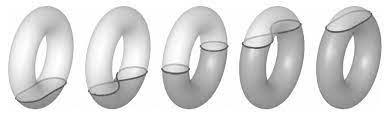

Kyler Siegel (kyler.siegel@usc.edu)
We will meet in KAP 245, 10:40-11:55am on Wednesdays and Fridays. For the first two weeks we met over Zoom (meeting id: 959 7373 3808).
Please email Kyler if you would like to receive emails about the course, including Zoom links.
This course is an introduction to Morse and Floer theory from the quantitative viewpoint. In the first half of the course, we will begin by briefly covering the basics of these theories, with a particular emphasis on action filtrations and the Hofer norm. We will also introduce persistent homology, an important tool for extracting information from a filtered chain complex (this also plays a central role in topological data analysis).
In the second half of the course, we will discuss various applications and recent advances in symplectic geometry. The topics will mostly be based on recent papers and will be chosen partly based on the interests of the audience. In the last few weeks of the course each student will give a presentation on a relevant topic, chosen in consultation with the instructor.
We will assume familiarity with smooth manifolds and differential forms, as well as basic algebraic topology. Some acquaintance with symplectic geometry is helpful but not required.
Some of the topics we may cover over the course of the semester (time permitting) include:
The lecture notes will be updated regularly and available here (be sure to refresh to update your cache). Note that Zoom recordings should also be available by Blackboard (let me know if you do not have access).
Near the end of the term, each registered participant in the course will give a talk based on a topic relevant to the course, chosen in consultation with the instructor.
By appointment, in person or over Zoom. Please email Kyler whenever you'd like to meet and we'll find a time that works.
| $\#$ | Date | Material | References |
|---|---|---|---|
| 1 | Friday 1/14/22 at 10:40am via Zoom | Introduction. Crash course in Morse theory and its implications. | Any standard reference on Morse theory (e.g. Milnor's book or [AD10]). |
| 2 | Wednesday 1/19/22 at 10:40am via Zoom | Quantitative Morse homology. Filtered chain complexes, persistence modules, and barcodes. | §1,4 of [PRSZ21] |
| 3 | Friday 1/21/22 at 10:40am via Zoom | More on persistence modules and barcodes. Interleaving distance and bottleneck distance. | §1,2 of [PRSZ21] |
| 4 | Wednesday 1/26/22 at 10:40am in KAP 245 | Finite metric spaces and topological data analysis. Begin proof of normal form theorem. | [C09], §2.1 of [PRSZ21] |
| 5 | Friday 1/28/22 at 10:40am in KAP 245 | Complete proof of normal form theorem. Computing barcodes. | §2.1 of [PRSZ21], [CZ05] |
| 6 | Wednesday 2/2/22 at 10:40am in KAP 245 | Computing barcodes via Smith normal form over $\mathbb{F}[t]$. Begin proof of the isometry theorem. | [CZ05], §3 of [PRSZ21]. |
| 7 | Friday 2/4/22 at 10:40am in KAP 245 | Complete proof of the isometry theorem. Boundary depth. | §3,4.2 of [PRSZ21] |
| 8 | Wednesday 2/9/22 at 10:40am in KAP 245 | Introduction to the Hamiltonian diffeomorphism group. | §7.1,7.2,7.3 of [PRSZ21], §1.3.1 of [PR14] |
| 9 | Friday 2/11/22 at 10:40am in KAP 245 | Finish proof that Ham is a group. The flux homomorphism. The Hofer norm. Displacement energy. | §7.3,§7.4 of [PRSZ21], §1.3.1,§1.3.3 of [PR14] |
| 10 | Wednesday 2/16/22 at 10:40am via Zoom | Ham as an infinite-dimensional Lie group. The action spectrum. | §7.4 of [PRSZ21], §1.3.2,§1.3.3,§1.3.4,§4.2 of [PR14] |
| 11 | Friday 2/18/22 at 10:40am in KAP 245 | More on the action spectrum. Subadditive spectral invariants. | §4.2,§4.3,§4.7 of [PR14] |
| 12 | Wednesday 2/23/22 at 10:40am in KAP 245 | More on subadditive spectral invariants. Spectral displacement energy and spectral width. The Calabi homomorphism. | §4.1,§4.3,§4.4,§4.7 of [PR14] |
| 13 | Friday 2/25/22 at 10:40am in KAP 245 | More on the Calabi homomorphism. Lower bounds on the spectral displacement energy. | §4.1,§4.3 of [PR14] |
| Wednesday 3/2/22 - class canceled (instructor conflict). | |||
| 14 | Friday 3/4/22 at 10:40am in KAP 245 | Group seminorms. The Poisson bracket inequality. Positivity of spectral width. | §3.5,§4.6 of [PR14] |
| 15 | Wednesday 3/9/22 at 10:40am in KAP 245 | Introduction to Hamiltonian Floer theory in the monotone setting. | |
| 16 | Friday 3/11/22 at 10:40am in KAP 245 | Floer's equation and the Novikov ring. The Conley-Zehnder index. | |
| Spring break 3/13/22 to 3/20/22 - NO CLASS | |||
| 17 | Wednesday 3/23/22 at 10:40am in KAP 245 | Floer homology as a quantitative invariant I. | |
| 18 | Friday 3/25/22 at 10:40am in KAP 245 | Floer homology as a quantitative invariant II. | |
| 19 | Wednesday 3/30/22 at 10:40am in KAP 245 | The spectral norm and its basic properties. The Hofer diameter of the two-torus is infinite. | [S00] |
| 20 | Friday 4/1/22 at 10:40am in KAP 245 | More on the spectral norm. Boundary depth and the Hofer diameter. | [U11] |
| 21 | Wednesday 4/6/22 at 10:40am in KAP 245 | Partial symplectic quasi-states. Proof that the universal cover of Ham has infinite Hofer diameter. | §4.5,§6.3.1 of [PR14] |
| 22 | Friday 4/8/22 at 10:40am in KAP 245 | Descending (asymptotic) spectral invariants from $\widetilde{Ham}$ to $Ham$. Applications to infinite Hofer diameter. | [McD08] |
| 23 | Wednesday 4/13/22 at 10:40am in KAP 245 | Zejing Wang: "Topics in topological data analysis" | Iqbal et al |
| 24 | Friday 4/15/22 at 10:40am in KAP 245 | Siyang Liu: "Legendrian contact homology and persistent homology" | Rizell-Sullivan |
| 25 I | Wednesday 4/20/22 at 10:40am in KAP 245 | Haosen Wu: "Non-Archimedean approach to the normal form theorem for barcodes" | Usher-Zhang |
| 25 II | Wednesday 4/20/22 at 11:20am in KAP 245 | Sanat Mulay: "Manifold learning" | Niyogi-Smale-Weinberger |
| 26 | Friday 4/22/22 at 10:40am in KAP 245 | Alec Sahakian: "A-model topological string theory and quantum cohomology" | |
| 27 I | Wednesday 4/27/22 at 10:40am in KAP 245 | David O'Connor: "Geodesics in the Hamiltonian diffeomorphism group" | |
| 27 II | Wednesday 4/27/22 at 11:20am in KAP 245 | Jonathan Michala: "The Hofer-Zehnder conjecture" | Shelukhin |
| 28 | Friday 4/29/22 at 10:40am in KAP 245 | Boxi Hao: "The Hofer-Zehnder capacity" | §12.4 of [MS17] |
| 29 | Wednesday 5/4/22 at 10:40am in KAP 245 | Jishnu Bose: "Barcodes and topological entropy of Hamiltonian diffeomorphisms" | Cineli-Ginzburg-Gurel |
| 30 | Friday 5/6/22 at 10:40am in KAP 245 | Detecting non-autonomous Hamiltonian diffeomorphisms | [PS15] |